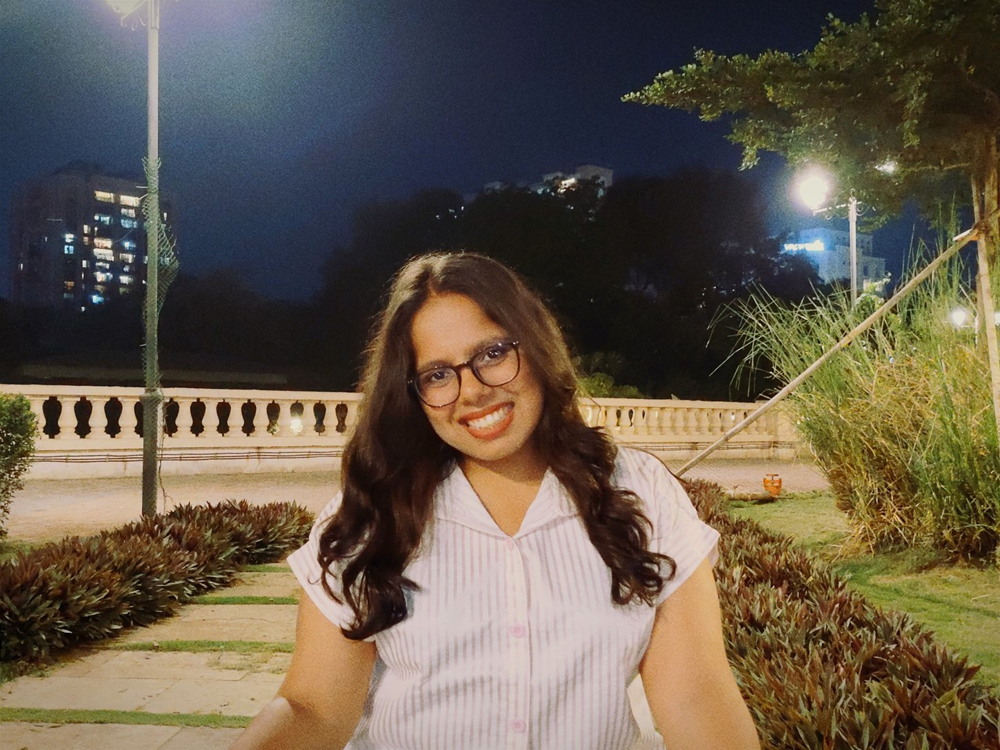
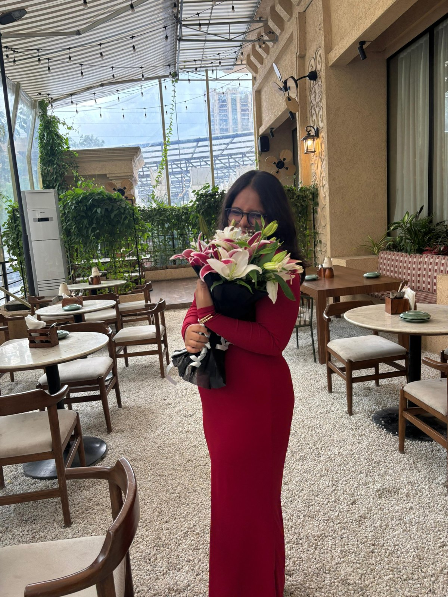
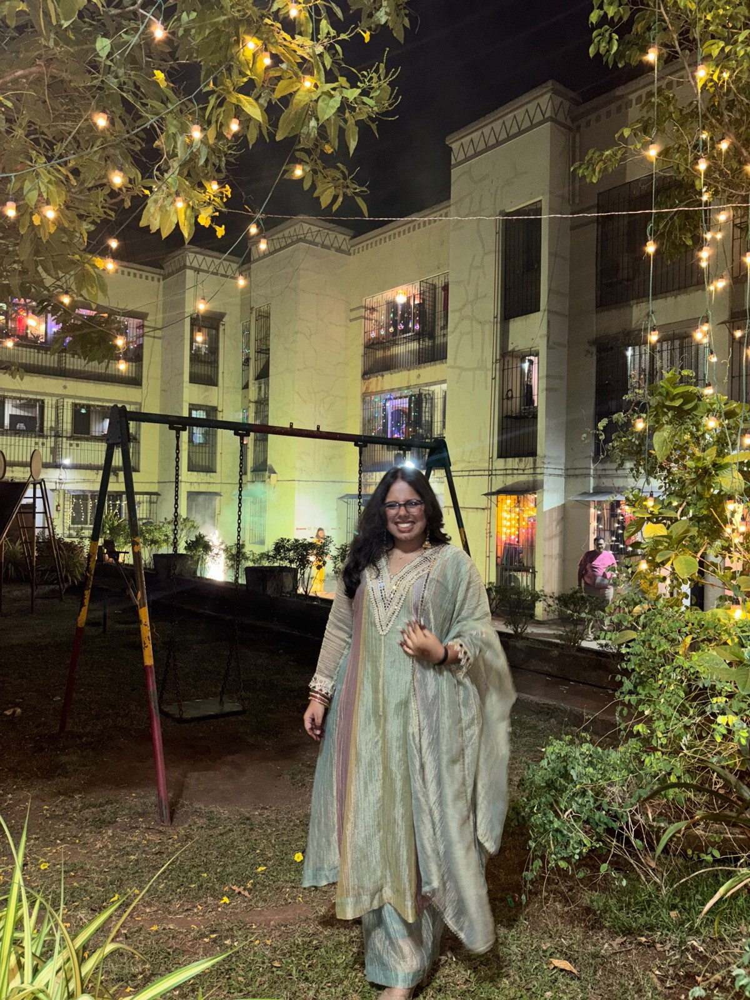
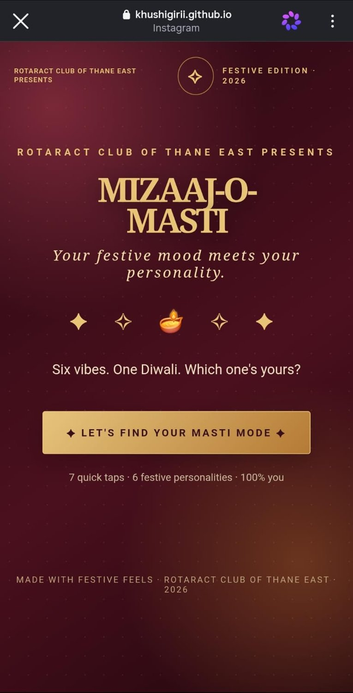

On the move
Sports have always found a place in my life — from shot put medals to badminton, volleyball and the occasional cricket match.
HELLO, I'M KHUSHI.
A curious mind, an eye for stories, a love for ideas and the drive to turn them into something real.
EXPLORE MY WORKTHERE'S MORE TO ME. COME TAKE A LOOK.



and I quite like it that way.
I've always been curious about a little bit of everything. People, stories, the way an idea takes shape, and how something seemingly ordinary can turn into something meaningful.
I enjoy expressing myself through words, exploring different perspectives and creating things that connect with people. I find just as much joy in bringing an idea to life as I do in discovering it.
What excites me most is the possibility of doing something I haven't done before. Learning something unexpected, taking on a new challenge or finding a little inspiration in the most unlikely places.
There's a creative side to me, an ambitious one, and one that's always wondering, what more could I do?
Somewhere between all of these, I'm building a journey that's uniquely mine.
MORE THAN THE WORKOUTSIDE THE WORK
Some things I make time for, simply because I enjoy them.
Sports have always found a place in my life — from shot put medals to badminton, volleyball and the occasional cricket match.
I'm not formally trained, but I love learning choreography and dancing for fun. I've performed a duo dance and choreographed a salsa act for junior college annual day.
Reading, writing and exploring stories — whether they're on a page, in a conversation or still taking shape as an idea.
A collection of ideas, projects, stories and experiences I've been part of.

DIGITAL EXPERIENCE · 2026A little festive fun, with a personality of its own.
An interactive Diwali personality quiz created for the Rotaract Club of Thane East — taking a festive idea from concept to a complete digital experience.
Original concepts, interactive Instagram stories, reels and social-first creative work.
A blog and two Hindi poems, with a little room for thoughts that turn into stories.
Different roles, different people, and plenty of opportunities to turn ideas into action.
2026–27 · ONGOING
Rotaract Club of Thane East
From creative concepts to content that connects, bringing ideas to life through social media and communication.
MAR 2025 — MAR 2026
MyCaptain · Internship
Leading teams, supporting learners and keeping people, plans and communication moving.
2024–25 & 2025–26
V.G. Vaze College
Two years of campus involvement, communication, event support and teamwork.
Learning across business, people, communication and the tools that help ideas take shape.
CURRENTLY PURSUING
V.G. Vaze College of Arts, Science and Commerce
Expected completion: 2027
ADDITIONAL QUALIFICATION
Completed · A+ (85%)
A LITTLE RECOGNITION
Recognised for leadership and team motivation in 2025.
GOOD IDEAS ARE EVEN BETTER
WHEN THEY'RE SHARED.
A project, an opportunity, a collaboration, or just a good conversation — I’d love to hear about it.
LET’S TALK